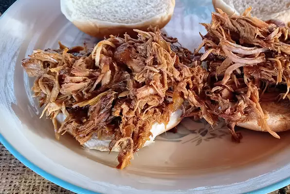

Pulled Pork

Slow cooked, Texas-style pulled pork that is served on a buttered and toasted roll. My family's favorite.
Ingredients
- 3 tablespoons dry barbeque rub, or more as needed
- 1 (3 1/2) pound bone-in pork sholider blade roast
- ½ teaspoon liquid smoke flavoring, divided
- 1 cup water, divided
- ¾ cup barbeque sauce, or as needed
- salt and freshly ground black pepper to taste
- 12 soft white hamburger buns
- ¾ cup barbeque sauce, divided
Preparation
-
Pour the vegetable oil into the bottom of a slow cooker. Place the pork roast into the slow cooker; pour in the barbecue sauce, apple cider vinegar, and chicken broth. Stir in the brown sugar, yellow mustard, Worcestershire sauce, chili powder, onion, garlic, and thyme. Cover and cook on High until the roast shreds easily with a fork, 5 to 6 hours.
-
Remove the roast from the slow cooker, and shred the meat using two forks. Return the shredded pork to the slow cooker, and stir the meat into the juices.
-
Spread the inside of both halves of hamburger buns with butter. Toast the buns, butter side down, in a skillet over medium heat until golden brown. Spoon pork into the toasted buns.
Home